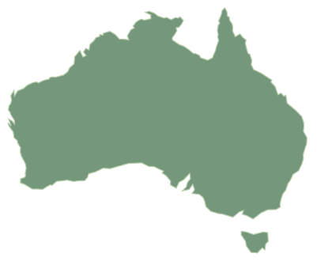

Locate the work
Explore geographic project and opportunity context, with location precision made explicit.
AUSTRALIAN PROJECT INTELLIGENCE
Start with your territory. Connect project activity, delivery organisations and predicted equipment demand to the places your team serves.

WAQLDNSWCHOOSE A SAMPLE TERRITORY
This selector changes illustrative content.
Check current coverage in the platform.
THINK IN TERRITORIES
Explore geographic project and opportunity context, with location precision made explicit.
Read the project stage and evidence before deciding whether the signal fits your territory.
Confirm timing, organisations and actual equipment needs through your own commercial process.
START WITH THE PLACES YOU KNOW